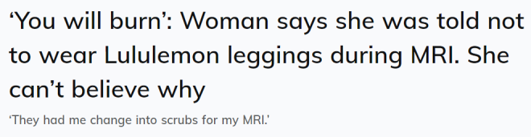
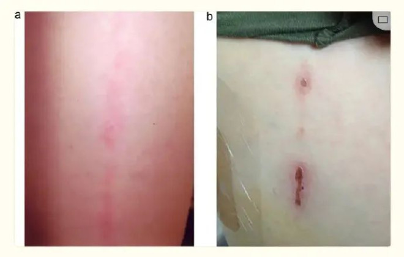
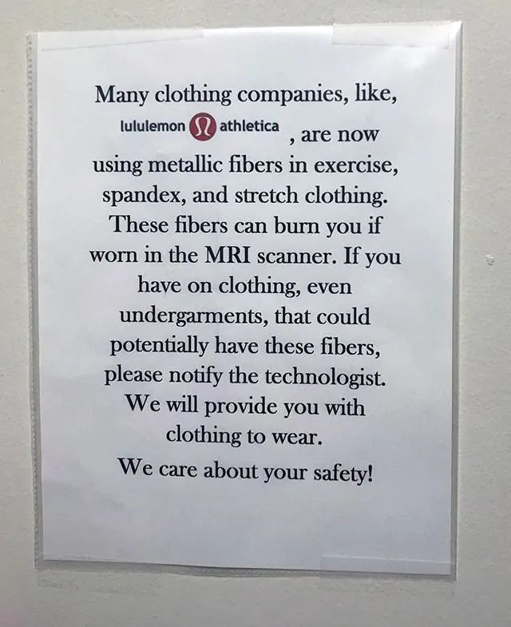

当一个人接受医疗程序时，他可能会对实际接受治疗前需要做的准备工作感到惊讶。
例如，可能会被告知在手术前不要吃东西和喝水，或者被要求不要喷香水或除臭剂。
然而，TikTok 用户 Izzi（@izzicavotta）收到的一个要求让她觉得特别奇怪。根据她拥有超过 367,000 次浏览量的视频，Izzi 声称她被要求不要穿 Lululemon 紧身裤去做核磁共振检查。

为什么不能穿 Lululemon 紧身裤做核磁共振检查？
据伊兹称，她在准备做核磁共振检查时，接到了医生打来的一个奇怪电话。
“昨天，他们打电话给我，说‘嘿，顺便说一下，确保你在做核磁共振检查时不要穿 Lululemon 紧身裤，’”她回忆道。
“首先，我想，‘哦，你们以为我很有钱吗……其次，为什么呢？’”她继续说道。“他们说 Lululemon 紧身裤里有微金属，如果你穿着它做核磁共振检查，你会被烧伤。”
最后，她问道：“为什么你的裤子里有微金属？”
Lululemon 的裤子里有“微金属”吗？
Lululemon 的某些产品确实含有“金属”，但这一事实并没有向消费者隐瞒。事实上，它在公司网站上公开宣传了这一点。
据该公司称，产品中的纯银与织物交织在一起，有助于防止运动后衣服发臭。虽然这可能对锻炼有益，但专家建议不要在核磁共振成像中穿着具有这种功能的产品。
《健康成像》杂志的医学博士 Betsy Grunch 警告说：“如果你穿着它进入核磁共振成像仪，有可能会造成皮肤灼伤。”
在这篇文章中，Grunch 引用了一个案例来说明这个问题。
“一名穿着运动服进行核磁共振扫描的女性的成像。她衣服的标签上写着面料是‘100% 聚酯’。尽管如此，图像中仍能清楚地看到金属伪影。这位女士在扫描后发现腿上有红色条纹，一周后变成了水泡。她腿上的纹路与扫描时穿的裤子上的纹路一致。”

值得注意的是，嵌银并非 Lululemon 独有的现象，事实上，许多健身品牌都有这种现象。
在评论区，观众们分享了自己的核磁共振检查经历。
一位用户说：“他们让我换上手术服做核磁共振检查。”
“他们对我的纹身也是这么说的。显然他们现在使用金属墨水来延长纹身的寿命？虽然带着纹身做核磁共振检查是安全的，但在检查过程中纹身可能会受到刺激。”
“我也遇到过这种情况。它们含有金属！我穿着我认为安全的紧身裤去做核磁共振检查，他们让我把它脱掉，”第三个人详细说道。

专家指出，核磁是最常用的医疗检查之一，70%并发症与烧伤有关。检查前的金属探测可以预防烧伤。但有一部分案例检查不到金属，患者做核磁时也没有察觉，只是后来因灼痛才发现烧伤。还有一例案例与此类似，一名11岁女孩检查脊柱侧弯后感到灼热感，躯干右侧和手臂相应部位出现红斑疱疹，经查是长T恤的材料问题。
目前，许多服装公司在运动服装、氨纶和弹力服装中使用金属纤维，除去衣服上的细菌和异味。因此当我们看到衣服有“抗菌”、“抗微生物”的功能，就意味着其中可能含有金属成分。随着技术进步，这些细小的纤维不会被金属探测器检测到，为避免意外，患者在检查前需换下有除菌等特殊功能的运动服装；若在检查中发现金属伪影，检测人员需要停止检查，进一步询问患者衣服成分。
提醒小伙伴们，大家还是都注意点吧！